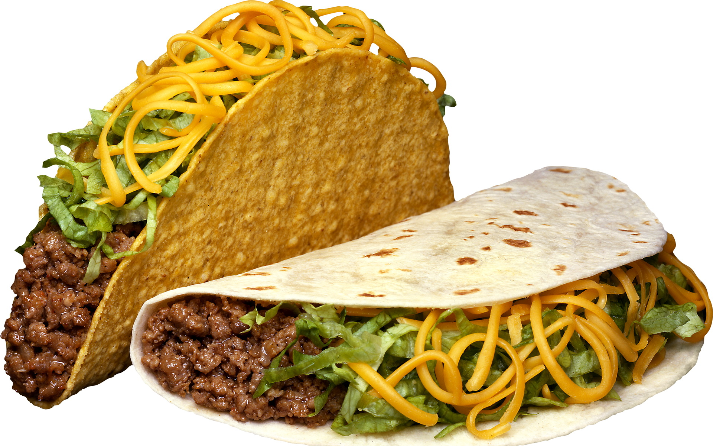

Taacos

Description
Tacos are a traditional Mexican dish consisting of small hand-sized corn or wheat tortillas topped with a filling. Tacos can be made with a variety of fillings, including beef, pork, chicken, seafood, beans, vegetables, and cheese, allowing for great versatility and variety.
Ingredients
- 8 small corn or flour tortillas
- 1 lb ground beef or chicken
- 1 packet taco seasoning mix
- 1/2 cup water
- 1 cup shredded lettuce
- 1 cup diced tomatoes
- 1 cup shredded cheese
- 1/2 cup sour cream
- 1/2 cup salsa
- 1/4 cup chopped onions (optional)
- 1/4 cup chopped cilantro (optional)
Steps
- In a large skillet, cook the ground beef or chicken over medium heat until fully cooked. Drain any excess fat.
- Add the taco seasoning mix and water to the skillet. Stir to combine and cook for another 5 minutes, or until the sauce has thickened.
- While the meat is cooking, warm the tortillas in a separate skillet or in the microwave until they are soft and pliable.
- Assemble the tacos by placing a generous amount of the meat mixture in the center of each tortilla.
- Top the meat with shredded lettuce, diced tomatoes, shredded cheese, sour cream, salsa, and any other desired toppings such as chopped onions or cilantro.
- Serve the tacos immediately and enjoy!